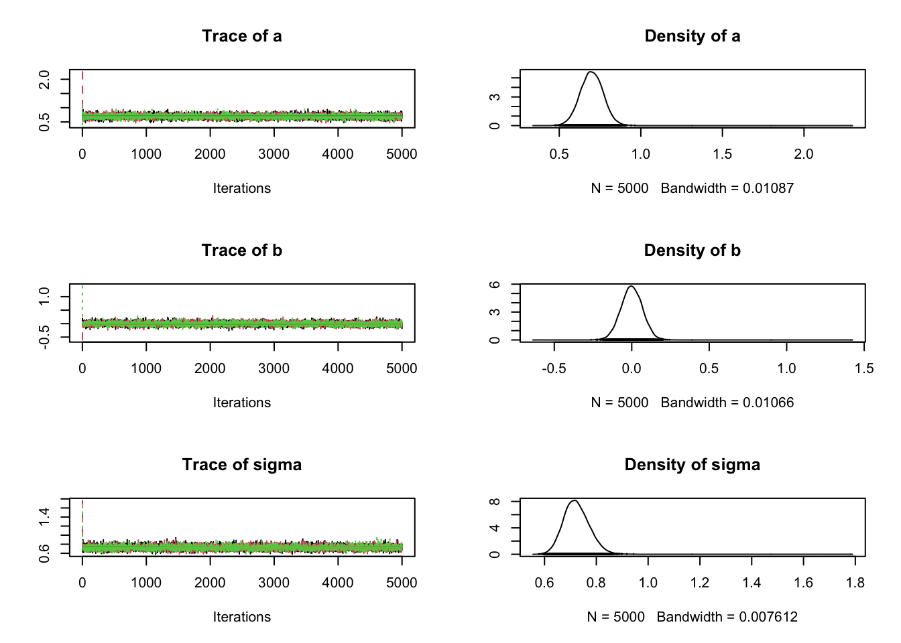
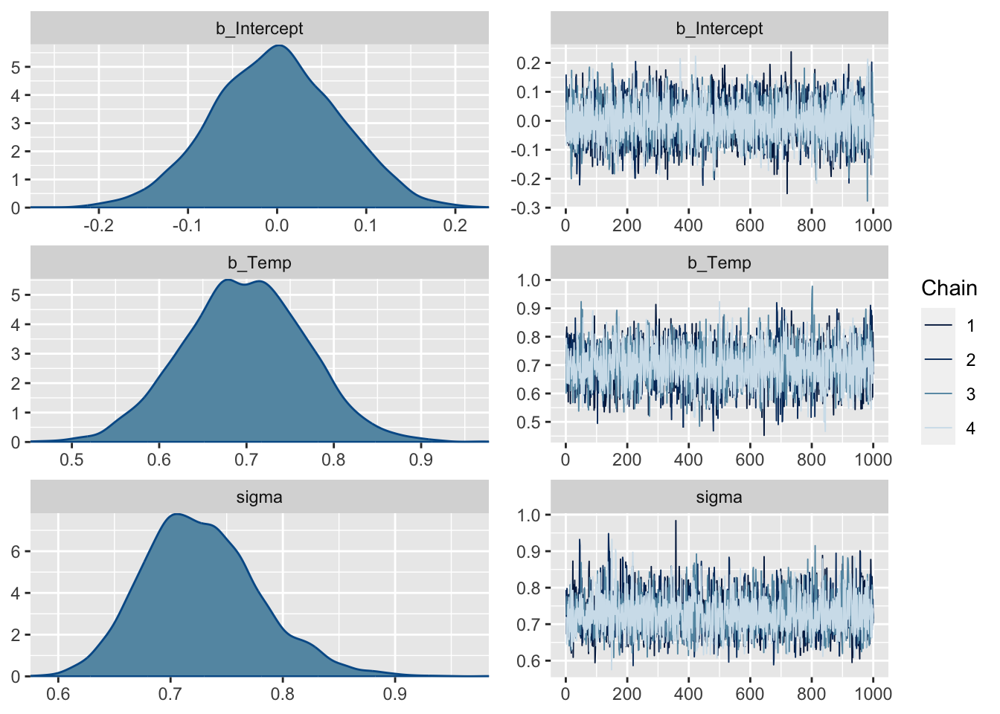
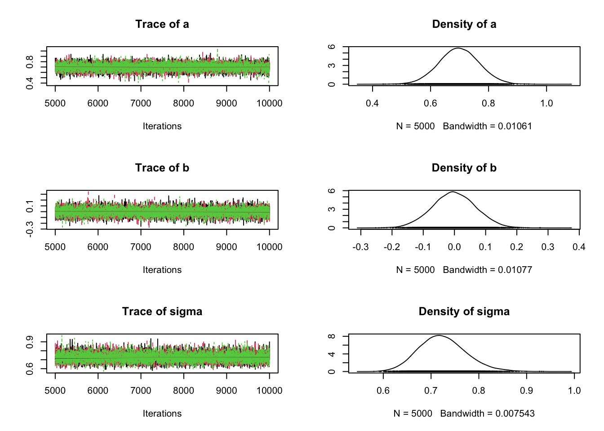
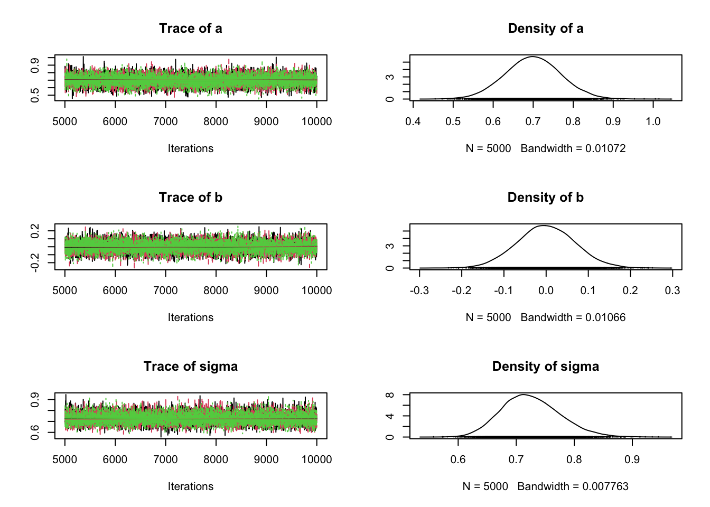

airqualityCleaned = airquality[complete.cases(airquality),]
airqualityCleaned = data.frame(scale(airqualityCleaned))
plot(Ozone ~ Temp, data = airqualityCleaned)3 Posterior estimation
3.1 Fitting a linear regression with different MCMCs
We will use the dataset airquality, just removing NAs and scaling all variables for convenience
3.1.1 Frequentist inference
fit <- lm(Ozone ~ Temp, data = airqualityCleaned)
summary(fit)
Call:
lm(formula = Ozone ~ Temp, data = airqualityCleaned)
Residuals:
Min 1Q Median 3Q Max
-1.2298 -0.5247 -0.0263 0.3138 3.5485
Coefficients:
Estimate Std. Error t value Pr(>|t|)
(Intercept) 1.232e-17 6.823e-02 0.00 1
Temp 6.985e-01 6.854e-02 10.19 <2e-16 ***
---
Signif. codes: 0 '***' 0.001 '**' 0.01 '*' 0.05 '.' 0.1 ' ' 1
Residual standard error: 0.7188 on 109 degrees of freedom
Multiple R-squared: 0.488, Adjusted R-squared: 0.4833
F-statistic: 103.9 on 1 and 109 DF, p-value: < 2.2e-16library(effects)Loading required package: carDatalattice theme set by effectsTheme()
See ?effectsTheme for details.plot(allEffects(fit, partial.residuals = T))
par(mfrow = c(2,2))
plot(fit) # residuals
3.1.2 Bayesian regression with brms
library(brms)Loading required package: RcppLoading 'brms' package (version 2.17.0). Useful instructions
can be found by typing help('brms'). A more detailed introduction
to the package is available through vignette('brms_overview').
Attaching package: 'brms'The following object is masked from 'package:stats':
arfit <- brm(Ozone ~ Temp, data = airqualityCleaned)Compiling Stan program...Start sampling
SAMPLING FOR MODEL 'anon_model' NOW (CHAIN 1).
Chain 1:
Chain 1: Gradient evaluation took 2.7e-05 seconds
Chain 1: 1000 transitions using 10 leapfrog steps per transition would take 0.27 seconds.
Chain 1: Adjust your expectations accordingly!
Chain 1:
Chain 1:
Chain 1: Iteration: 1 / 2000 [ 0%] (Warmup)
Chain 1: Iteration: 200 / 2000 [ 10%] (Warmup)
Chain 1: Iteration: 400 / 2000 [ 20%] (Warmup)
Chain 1: Iteration: 600 / 2000 [ 30%] (Warmup)
Chain 1: Iteration: 800 / 2000 [ 40%] (Warmup)
Chain 1: Iteration: 1000 / 2000 [ 50%] (Warmup)
Chain 1: Iteration: 1001 / 2000 [ 50%] (Sampling)
Chain 1: Iteration: 1200 / 2000 [ 60%] (Sampling)
Chain 1: Iteration: 1400 / 2000 [ 70%] (Sampling)
Chain 1: Iteration: 1600 / 2000 [ 80%] (Sampling)
Chain 1: Iteration: 1800 / 2000 [ 90%] (Sampling)
Chain 1: Iteration: 2000 / 2000 [100%] (Sampling)
Chain 1:
Chain 1: Elapsed Time: 0.023 seconds (Warm-up)
Chain 1: 0.023 seconds (Sampling)
Chain 1: 0.046 seconds (Total)
Chain 1:
SAMPLING FOR MODEL 'anon_model' NOW (CHAIN 2).
Chain 2:
Chain 2: Gradient evaluation took 8e-06 seconds
Chain 2: 1000 transitions using 10 leapfrog steps per transition would take 0.08 seconds.
Chain 2: Adjust your expectations accordingly!
Chain 2:
Chain 2:
Chain 2: Iteration: 1 / 2000 [ 0%] (Warmup)
Chain 2: Iteration: 200 / 2000 [ 10%] (Warmup)
Chain 2: Iteration: 400 / 2000 [ 20%] (Warmup)
Chain 2: Iteration: 600 / 2000 [ 30%] (Warmup)
Chain 2: Iteration: 800 / 2000 [ 40%] (Warmup)
Chain 2: Iteration: 1000 / 2000 [ 50%] (Warmup)
Chain 2: Iteration: 1001 / 2000 [ 50%] (Sampling)
Chain 2: Iteration: 1200 / 2000 [ 60%] (Sampling)
Chain 2: Iteration: 1400 / 2000 [ 70%] (Sampling)
Chain 2: Iteration: 1600 / 2000 [ 80%] (Sampling)
Chain 2: Iteration: 1800 / 2000 [ 90%] (Sampling)
Chain 2: Iteration: 2000 / 2000 [100%] (Sampling)
Chain 2:
Chain 2: Elapsed Time: 0.022 seconds (Warm-up)
Chain 2: 0.022 seconds (Sampling)
Chain 2: 0.044 seconds (Total)
Chain 2:
SAMPLING FOR MODEL 'anon_model' NOW (CHAIN 3).
Chain 3:
Chain 3: Gradient evaluation took 8e-06 seconds
Chain 3: 1000 transitions using 10 leapfrog steps per transition would take 0.08 seconds.
Chain 3: Adjust your expectations accordingly!
Chain 3:
Chain 3:
Chain 3: Iteration: 1 / 2000 [ 0%] (Warmup)
Chain 3: Iteration: 200 / 2000 [ 10%] (Warmup)
Chain 3: Iteration: 400 / 2000 [ 20%] (Warmup)
Chain 3: Iteration: 600 / 2000 [ 30%] (Warmup)
Chain 3: Iteration: 800 / 2000 [ 40%] (Warmup)
Chain 3: Iteration: 1000 / 2000 [ 50%] (Warmup)
Chain 3: Iteration: 1001 / 2000 [ 50%] (Sampling)
Chain 3: Iteration: 1200 / 2000 [ 60%] (Sampling)
Chain 3: Iteration: 1400 / 2000 [ 70%] (Sampling)
Chain 3: Iteration: 1600 / 2000 [ 80%] (Sampling)
Chain 3: Iteration: 1800 / 2000 [ 90%] (Sampling)
Chain 3: Iteration: 2000 / 2000 [100%] (Sampling)
Chain 3:
Chain 3: Elapsed Time: 0.021 seconds (Warm-up)
Chain 3: 0.024 seconds (Sampling)
Chain 3: 0.045 seconds (Total)
Chain 3:
SAMPLING FOR MODEL 'anon_model' NOW (CHAIN 4).
Chain 4:
Chain 4: Gradient evaluation took 4e-06 seconds
Chain 4: 1000 transitions using 10 leapfrog steps per transition would take 0.04 seconds.
Chain 4: Adjust your expectations accordingly!
Chain 4:
Chain 4:
Chain 4: Iteration: 1 / 2000 [ 0%] (Warmup)
Chain 4: Iteration: 200 / 2000 [ 10%] (Warmup)
Chain 4: Iteration: 400 / 2000 [ 20%] (Warmup)
Chain 4: Iteration: 600 / 2000 [ 30%] (Warmup)
Chain 4: Iteration: 800 / 2000 [ 40%] (Warmup)
Chain 4: Iteration: 1000 / 2000 [ 50%] (Warmup)
Chain 4: Iteration: 1001 / 2000 [ 50%] (Sampling)
Chain 4: Iteration: 1200 / 2000 [ 60%] (Sampling)
Chain 4: Iteration: 1400 / 2000 [ 70%] (Sampling)
Chain 4: Iteration: 1600 / 2000 [ 80%] (Sampling)
Chain 4: Iteration: 1800 / 2000 [ 90%] (Sampling)
Chain 4: Iteration: 2000 / 2000 [100%] (Sampling)
Chain 4:
Chain 4: Elapsed Time: 0.022 seconds (Warm-up)
Chain 4: 0.023 seconds (Sampling)
Chain 4: 0.045 seconds (Total)
Chain 4: summary(fit) Family: gaussian
Links: mu = identity; sigma = identity
Formula: Ozone ~ Temp
Data: airqualityCleaned (Number of observations: 111)
Draws: 4 chains, each with iter = 2000; warmup = 1000; thin = 1;
total post-warmup draws = 4000
Population-Level Effects:
Estimate Est.Error l-95% CI u-95% CI Rhat Bulk_ESS Tail_ESS
Intercept -0.00 0.07 -0.14 0.14 1.00 3915 2692
Temp 0.70 0.07 0.56 0.84 1.00 4063 2825
Family Specific Parameters:
Estimate Est.Error l-95% CI u-95% CI Rhat Bulk_ESS Tail_ESS
sigma 0.73 0.05 0.64 0.84 1.00 3587 2925
Draws were sampled using sampling(NUTS). For each parameter, Bulk_ESS
and Tail_ESS are effective sample size measures, and Rhat is the potential
scale reduction factor on split chains (at convergence, Rhat = 1).plot(fit, ask = FALSE)plot(conditional_effects(fit), ask = FALSE)
fit$model # model that is actually fit via // generated with brms 2.17.0
functions {
}
data {
int<lower=1> N; // total number of observations
vector[N] Y; // response variable
int<lower=1> K; // number of population-level effects
matrix[N, K] X; // population-level design matrix
int prior_only; // should the likelihood be ignored?
}
transformed data {
int Kc = K - 1;
matrix[N, Kc] Xc; // centered version of X without an intercept
vector[Kc] means_X; // column means of X before centering
for (i in 2:K) {
means_X[i - 1] = mean(X[, i]);
Xc[, i - 1] = X[, i] - means_X[i - 1];
}
}
parameters {
vector[Kc] b; // population-level effects
real Intercept; // temporary intercept for centered predictors
real<lower=0> sigma; // dispersion parameter
}
transformed parameters {
real lprior = 0; // prior contributions to the log posterior
lprior += student_t_lpdf(Intercept | 3, -0.3, 2.5);
lprior += student_t_lpdf(sigma | 3, 0, 2.5)
- 1 * student_t_lccdf(0 | 3, 0, 2.5);
}
model {
// likelihood including constants
if (!prior_only) {
target += normal_id_glm_lpdf(Y | Xc, Intercept, b, sigma);
}
// priors including constants
target += lprior;
}
generated quantities {
// actual population-level intercept
real b_Intercept = Intercept - dot_product(means_X, b);
}pp_check(fit) # residual checkUsing 10 posterior draws for ppc type 'dens_overlay' by default.
3.1.3 Bayesian analysis with JAGS
The general approach in JAGS is to
- Set up a list that contains all the necessary data
- Write the model as a string in the JAGS specific BUGS dialect
- Compile the model and run the MCMC for an adaptation (burn-in) phase
library(rjags)Loading required package: codaLinked to JAGS 4.3.0Loaded modules: basemod,bugsData = list(y = airqualityCleaned$Ozone, x = airqualityCleaned$Temp, nobs = nrow(airqualityCleaned))
modelCode = "
model{
# Likelihood
for(i in 1:nobs){
mu[i] <- a*x[i]+ b
y[i] ~ dnorm(mu[i],tau) # dnorm in jags parameterizes via precision = 1/sd^2
}
# Prior distributions
# For location parameters, normal choice is wide normal
a ~ dnorm(0,0.0001)
b ~ dnorm(0,0.0001)
# For scale parameters, normal choice is decaying
tau ~ dgamma(0.001, 0.001)
sigma <- 1/sqrt(tau) # this line is optional, just in case you want to observe sigma or set sigma (e.g. for inits)
}
"
# Specify a function to generate inital values for the parameters
# (optional, if not provided, will start with the mean of the prior )
inits.fn <- function() list(a = rnorm(1), b = rnorm(1), tau = 1/runif(1,1,100))
# sets up the model
jagsModel <- jags.model(file= textConnection(modelCode), data=Data, init = inits.fn, n.chains = 3)Compiling model graph
Resolving undeclared variables
Allocating nodes
Graph information:
Observed stochastic nodes: 111
Unobserved stochastic nodes: 3
Total graph size: 310
Initializing model# MCMC sample from model
Samples <- coda.samples(jagsModel, variable.names = c("a","b","sigma"), n.iter = 5000)
# Plot the mcmc chain and the posterior sample
plot(Samples)
summary(Samples)
Iterations = 1:5000
Thinning interval = 1
Number of chains = 3
Sample size per chain = 5000
1. Empirical mean and standard deviation for each variable,
plus standard error of the mean:
Mean SD Naive SE Time-series SE
a 0.6994702 0.06970 0.0005691 0.0005642
b -0.0006431 0.06977 0.0005696 0.0005617
sigma 0.7241987 0.04994 0.0004078 0.0004078
2. Quantiles for each variable:
2.5% 25% 50% 75% 97.5%
a 0.5622 0.65337 0.6987859 0.74532 0.8368
b -0.1377 -0.04669 -0.0009866 0.04612 0.1329
sigma 0.6345 0.68963 0.7214112 0.75572 0.83043.1.4 Bayesian analysis with STAN
Approach is identical to JAGS just that we have to define all variables in the section data
library(rstan)Loading required package: StanHeaders
rstan version 2.32.3 (Stan version 2.26.1)For execution on a local, multicore CPU with excess RAM we recommend calling
options(mc.cores = parallel::detectCores()).
To avoid recompilation of unchanged Stan programs, we recommend calling
rstan_options(auto_write = TRUE)
For within-chain threading using `reduce_sum()` or `map_rect()` Stan functions,
change `threads_per_chain` option:
rstan_options(threads_per_chain = 1)
Attaching package: 'rstan'The following object is masked from 'package:coda':
traceplotstanmodelcode <- "
data {
int<lower=0> N;
vector[N] x;
vector[N] y;
}
parameters {
real alpha;
real beta;
real<lower=0> sigma;
}
model {
y ~ normal(alpha + beta * x, sigma);
}
"
dat = list(y = airqualityCleaned$Ozone, x = airqualityCleaned$Temp, N = nrow(airqualityCleaned))
fit <- stan(model_code = stanmodelcode, model_name = "example",
data = dat, iter = 2012, chains = 3, verbose = TRUE,
sample_file = file.path(tempdir(), 'norm.csv'))
TRANSLATING MODEL 'example' FROM Stan CODE TO C++ CODE NOW.
OS: x86_64, darwin17.0; rstan: 2.32.3; Rcpp: 1.0.11; inline: 0.3.19
>> setting environment variables:
PKG_LIBS = '/Library/Frameworks/R.framework/Versions/4.2/Resources/library/rstan/lib//libStanServices.a' -L'/Library/Frameworks/R.framework/Versions/4.2/Resources/library/StanHeaders/lib/' -lStanHeaders -L'/Library/Frameworks/R.framework/Versions/4.2/Resources/library/RcppParallel/lib/' -ltbb
PKG_CPPFLAGS = -I"/Library/Frameworks/R.framework/Versions/4.2/Resources/library/Rcpp/include/" -I"/Library/Frameworks/R.framework/Versions/4.2/Resources/library/RcppEigen/include/" -I"/Library/Frameworks/R.framework/Versions/4.2/Resources/library/RcppEigen/include/unsupported" -I"/Library/Frameworks/R.framework/Versions/4.2/Resources/library/BH/include" -I"/Library/Frameworks/R.framework/Versions/4.2/Resources/library/StanHeaders/include/src/" -I"/Library/Frameworks/R.framework/Versions/4.2/Resources/library/StanHeaders/include/" -I"/Library/Frameworks/R.framework/Versions/4.2/Resources/library/RcppParallel/include/" -I"/Library/Frameworks/R.framework/Versions/4.2/Resources/library/rstan/include" -DEIGEN_NO_DEBUG -DBOOST_DISABLE_ASSERTS -DBOOST_PENDING_INTEGER_LOG2_HPP -DSTAN_THREADS -DUSE_STANC3 -DSTRICT_R_HEADERS -DBOOST_PHOENIX_NO_VARIADIC_EXPRESSION -D_HAS_AUTO_PTR_ETC=0 -include '/Library/Frameworks/R.framework/Versions/4.2/Resources/library/StanHeaders/include/stan/math/prim/fun/Eigen.hpp' -D_REENTRANT -DRCPP_PARALLEL_USE_TBB=1
>> Program source :
1 :
2 : // includes from the plugin
3 : // [[Rcpp::plugins(cpp14)]]
4 :
5 :
6 : // user includes
7 : #include <Rcpp.h>
8 : using namespace Rcpp;
9 : #ifndef MODELS_HPP
10 : #define MODELS_HPP
11 : #define STAN__SERVICES__COMMAND_HPP
12 : #include <rstan/rstaninc.hpp>
13 : #ifndef USE_STANC3
14 : #define USE_STANC3
15 : #endif
16 : // Code generated by stanc v2.32.2
17 : #include <stan/model/model_header.hpp>
18 : namespace modelb6c140c94242_example_namespace {
19 : using stan::model::model_base_crtp;
20 : using namespace stan::math;
21 : stan::math::profile_map profiles__;
22 : static constexpr std::array<const char*, 10> locations_array__ =
23 : {" (found before start of program)",
24 : " (in 'example', line 7, column 4 to column 15)",
25 : " (in 'example', line 8, column 4 to column 14)",
26 : " (in 'example', line 9, column 4 to column 24)",
27 : " (in 'example', line 12, column 4 to column 40)",
28 : " (in 'example', line 2, column 4 to column 19)",
29 : " (in 'example', line 3, column 11 to column 12)",
30 : " (in 'example', line 3, column 4 to column 16)",
31 : " (in 'example', line 4, column 11 to column 12)",
32 : " (in 'example', line 4, column 4 to column 16)"};
33 : class modelb6c140c94242_example final : public model_base_crtp<modelb6c140c94242_example> {
34 : private:
35 : int N;
36 : Eigen::Matrix<double,-1,1> x_data__;
37 : Eigen::Matrix<double,-1,1> y_data__;
38 : Eigen::Map<Eigen::Matrix<double,-1,1>> x{nullptr, 0};
39 : Eigen::Map<Eigen::Matrix<double,-1,1>> y{nullptr, 0};
40 : public:
41 : ~modelb6c140c94242_example() {}
42 : modelb6c140c94242_example(stan::io::var_context& context__, unsigned int
43 : random_seed__ = 0, std::ostream*
44 : pstream__ = nullptr) : model_base_crtp(0) {
45 : int current_statement__ = 0;
46 : using local_scalar_t__ = double;
47 : boost::ecuyer1988 base_rng__ =
48 : stan::services::util::create_rng(random_seed__, 0);
49 : // suppress unused var warning
50 : (void) base_rng__;
51 : static constexpr const char* function__ =
52 : "modelb6c140c94242_example_namespace::modelb6c140c94242_example";
53 : // suppress unused var warning
54 : (void) function__;
55 : local_scalar_t__ DUMMY_VAR__(std::numeric_limits<double>::quiet_NaN());
56 : // suppress unused var warning
57 : (void) DUMMY_VAR__;
58 : try {
59 : int pos__ = std::numeric_limits<int>::min();
60 : pos__ = 1;
61 : current_statement__ = 5;
62 : context__.validate_dims("data initialization", "N", "int",
63 : std::vector<size_t>{});
64 : N = std::numeric_limits<int>::min();
65 : current_statement__ = 5;
66 : N = context__.vals_i("N")[(1 - 1)];
67 : current_statement__ = 5;
68 : stan::math::check_greater_or_equal(function__, "N", N, 0);
69 : current_statement__ = 6;
70 : stan::math::validate_non_negative_index("x", "N", N);
71 : current_statement__ = 7;
72 : context__.validate_dims("data initialization", "x", "double",
73 : std::vector<size_t>{static_cast<size_t>(N)});
74 : x_data__ = Eigen::Matrix<double,-1,1>::Constant(N,
75 : std::numeric_limits<double>::quiet_NaN());
76 : new (&x) Eigen::Map<Eigen::Matrix<double,-1,1>>(x_data__.data(), N);
77 : {
78 : std::vector<local_scalar_t__> x_flat__;
79 : current_statement__ = 7;
80 : x_flat__ = context__.vals_r("x");
81 : current_statement__ = 7;
82 : pos__ = 1;
83 : current_statement__ = 7;
84 : for (int sym1__ = 1; sym1__ <= N; ++sym1__) {
85 : current_statement__ = 7;
86 : stan::model::assign(x, x_flat__[(pos__ - 1)],
87 : "assigning variable x", stan::model::index_uni(sym1__));
88 : current_statement__ = 7;
89 : pos__ = (pos__ + 1);
90 : }
91 : }
92 : current_statement__ = 8;
93 : stan::math::validate_non_negative_index("y", "N", N);
94 : current_statement__ = 9;
95 : context__.validate_dims("data initialization", "y", "double",
96 : std::vector<size_t>{static_cast<size_t>(N)});
97 : y_data__ = Eigen::Matrix<double,-1,1>::Constant(N,
98 : std::numeric_limits<double>::quiet_NaN());
99 : new (&y) Eigen::Map<Eigen::Matrix<double,-1,1>>(y_data__.data(), N);
100 : {
101 : std::vector<local_scalar_t__> y_flat__;
102 : current_statement__ = 9;
103 : y_flat__ = context__.vals_r("y");
104 : current_statement__ = 9;
105 : pos__ = 1;
106 : current_statement__ = 9;
107 : for (int sym1__ = 1; sym1__ <= N; ++sym1__) {
108 : current_statement__ = 9;
109 : stan::model::assign(y, y_flat__[(pos__ - 1)],
110 : "assigning variable y", stan::model::index_uni(sym1__));
111 : current_statement__ = 9;
112 : pos__ = (pos__ + 1);
113 : }
114 : }
115 : } catch (const std::exception& e) {
116 : stan::lang::rethrow_located(e, locations_array__[current_statement__]);
117 : }
118 : num_params_r__ = 1 + 1 + 1;
119 : }
120 : inline std::string model_name() const final {
121 : return "modelb6c140c94242_example";
122 : }
123 : inline std::vector<std::string> model_compile_info() const noexcept {
124 : return std::vector<std::string>{"stanc_version = stanc3 v2.32.2",
125 : "stancflags = --"};
126 : }
127 : template <bool propto__, bool jacobian__, typename VecR, typename VecI,
128 : stan::require_vector_like_t<VecR>* = nullptr,
129 : stan::require_vector_like_vt<std::is_integral, VecI>* = nullptr>
130 : inline stan::scalar_type_t<VecR>
131 : log_prob_impl(VecR& params_r__, VecI& params_i__, std::ostream*
132 : pstream__ = nullptr) const {
133 : using T__ = stan::scalar_type_t<VecR>;
134 : using local_scalar_t__ = T__;
135 : T__ lp__(0.0);
136 : stan::math::accumulator<T__> lp_accum__;
137 : stan::io::deserializer<local_scalar_t__> in__(params_r__, params_i__);
138 : int current_statement__ = 0;
139 : local_scalar_t__ DUMMY_VAR__(std::numeric_limits<double>::quiet_NaN());
140 : // suppress unused var warning
141 : (void) DUMMY_VAR__;
142 : static constexpr const char* function__ =
143 : "modelb6c140c94242_example_namespace::log_prob";
144 : // suppress unused var warning
145 : (void) function__;
146 : try {
147 : local_scalar_t__ alpha = DUMMY_VAR__;
148 : current_statement__ = 1;
149 : alpha = in__.template read<local_scalar_t__>();
150 : local_scalar_t__ beta = DUMMY_VAR__;
151 : current_statement__ = 2;
152 : beta = in__.template read<local_scalar_t__>();
153 : local_scalar_t__ sigma = DUMMY_VAR__;
154 : current_statement__ = 3;
155 : sigma = in__.template read_constrain_lb<local_scalar_t__,
156 : jacobian__>(0, lp__);
157 : {
158 : current_statement__ = 4;
159 : lp_accum__.add(stan::math::normal_lpdf<propto__>(y,
160 : stan::math::add(alpha, stan::math::multiply(beta, x)),
161 : sigma));
162 : }
163 : } catch (const std::exception& e) {
164 : stan::lang::rethrow_located(e, locations_array__[current_statement__]);
165 : }
166 : lp_accum__.add(lp__);
167 : return lp_accum__.sum();
168 : }
169 : template <typename RNG, typename VecR, typename VecI, typename VecVar,
170 : stan::require_vector_like_vt<std::is_floating_point,
171 : VecR>* = nullptr, stan::require_vector_like_vt<std::is_integral,
172 : VecI>* = nullptr, stan::require_vector_vt<std::is_floating_point,
173 : VecVar>* = nullptr>
174 : inline void
175 : write_array_impl(RNG& base_rng__, VecR& params_r__, VecI& params_i__,
176 : VecVar& vars__, const bool
177 : emit_transformed_parameters__ = true, const bool
178 : emit_generated_quantities__ = true, std::ostream*
179 : pstream__ = nullptr) const {
180 : using local_scalar_t__ = double;
181 : stan::io::deserializer<local_scalar_t__> in__(params_r__, params_i__);
182 : stan::io::serializer<local_scalar_t__> out__(vars__);
183 : static constexpr bool propto__ = true;
184 : // suppress unused var warning
185 : (void) propto__;
186 : double lp__ = 0.0;
187 : // suppress unused var warning
188 : (void) lp__;
189 : int current_statement__ = 0;
190 : stan::math::accumulator<double> lp_accum__;
191 : local_scalar_t__ DUMMY_VAR__(std::numeric_limits<double>::quiet_NaN());
192 : // suppress unused var warning
193 : (void) DUMMY_VAR__;
194 : constexpr bool jacobian__ = false;
195 : static constexpr const char* function__ =
196 : "modelb6c140c94242_example_namespace::write_array";
197 : // suppress unused var warning
198 : (void) function__;
199 : try {
200 : double alpha = std::numeric_limits<double>::quiet_NaN();
201 : current_statement__ = 1;
202 : alpha = in__.template read<local_scalar_t__>();
203 : double beta = std::numeric_limits<double>::quiet_NaN();
204 : current_statement__ = 2;
205 : beta = in__.template read<local_scalar_t__>();
206 : double sigma = std::numeric_limits<double>::quiet_NaN();
207 : current_statement__ = 3;
208 : sigma = in__.template read_constrain_lb<local_scalar_t__,
209 : jacobian__>(0, lp__);
210 : out__.write(alpha);
211 : out__.write(beta);
212 : out__.write(sigma);
213 : if (stan::math::logical_negation(
214 : (stan::math::primitive_value(emit_transformed_parameters__) ||
215 : stan::math::primitive_value(emit_generated_quantities__)))) {
216 : return ;
217 : }
218 : if (stan::math::logical_negation(emit_generated_quantities__)) {
219 : return ;
220 : }
221 : } catch (const std::exception& e) {
222 : stan::lang::rethrow_located(e, locations_array__[current_statement__]);
223 : }
224 : }
225 : template <typename VecVar, typename VecI,
226 : stan::require_vector_t<VecVar>* = nullptr,
227 : stan::require_vector_like_vt<std::is_integral, VecI>* = nullptr>
228 : inline void
229 : unconstrain_array_impl(const VecVar& params_r__, const VecI& params_i__,
230 : VecVar& vars__, std::ostream* pstream__ = nullptr) const {
231 : using local_scalar_t__ = double;
232 : stan::io::deserializer<local_scalar_t__> in__(params_r__, params_i__);
233 : stan::io::serializer<local_scalar_t__> out__(vars__);
234 : int current_statement__ = 0;
235 : local_scalar_t__ DUMMY_VAR__(std::numeric_limits<double>::quiet_NaN());
236 : // suppress unused var warning
237 : (void) DUMMY_VAR__;
238 : try {
239 : int pos__ = std::numeric_limits<int>::min();
240 : pos__ = 1;
241 : local_scalar_t__ alpha = DUMMY_VAR__;
242 : current_statement__ = 1;
243 : alpha = in__.read<local_scalar_t__>();
244 : out__.write(alpha);
245 : local_scalar_t__ beta = DUMMY_VAR__;
246 : current_statement__ = 2;
247 : beta = in__.read<local_scalar_t__>();
248 : out__.write(beta);
249 : local_scalar_t__ sigma = DUMMY_VAR__;
250 : current_statement__ = 3;
251 : sigma = in__.read<local_scalar_t__>();
252 : out__.write_free_lb(0, sigma);
253 : } catch (const std::exception& e) {
254 : stan::lang::rethrow_located(e, locations_array__[current_statement__]);
255 : }
256 : }
257 : template <typename VecVar, stan::require_vector_t<VecVar>* = nullptr>
258 : inline void
259 : transform_inits_impl(const stan::io::var_context& context__, VecVar&
260 : vars__, std::ostream* pstream__ = nullptr) const {
261 : using local_scalar_t__ = double;
262 : stan::io::serializer<local_scalar_t__> out__(vars__);
263 : int current_statement__ = 0;
264 : local_scalar_t__ DUMMY_VAR__(std::numeric_limits<double>::quiet_NaN());
265 : // suppress unused var warning
266 : (void) DUMMY_VAR__;
267 : try {
268 : current_statement__ = 1;
269 : context__.validate_dims("parameter initialization", "alpha", "double",
270 : std::vector<size_t>{});
271 : current_statement__ = 2;
272 : context__.validate_dims("parameter initialization", "beta", "double",
273 : std::vector<size_t>{});
274 : current_statement__ = 3;
275 : context__.validate_dims("parameter initialization", "sigma", "double",
276 : std::vector<size_t>{});
277 : int pos__ = std::numeric_limits<int>::min();
278 : pos__ = 1;
279 : local_scalar_t__ alpha = DUMMY_VAR__;
280 : current_statement__ = 1;
281 : alpha = context__.vals_r("alpha")[(1 - 1)];
282 : out__.write(alpha);
283 : local_scalar_t__ beta = DUMMY_VAR__;
284 : current_statement__ = 2;
285 : beta = context__.vals_r("beta")[(1 - 1)];
286 : out__.write(beta);
287 : local_scalar_t__ sigma = DUMMY_VAR__;
288 : current_statement__ = 3;
289 : sigma = context__.vals_r("sigma")[(1 - 1)];
290 : out__.write_free_lb(0, sigma);
291 : } catch (const std::exception& e) {
292 : stan::lang::rethrow_located(e, locations_array__[current_statement__]);
293 : }
294 : }
295 : inline void
296 : get_param_names(std::vector<std::string>& names__, const bool
297 : emit_transformed_parameters__ = true, const bool
298 : emit_generated_quantities__ = true) const {
299 : names__ = std::vector<std::string>{"alpha", "beta", "sigma"};
300 : if (emit_transformed_parameters__) {}
301 : if (emit_generated_quantities__) {}
302 : }
303 : inline void
304 : get_dims(std::vector<std::vector<size_t>>& dimss__, const bool
305 : emit_transformed_parameters__ = true, const bool
306 : emit_generated_quantities__ = true) const {
307 : dimss__ = std::vector<std::vector<size_t>>{std::vector<size_t>{},
308 : std::vector<size_t>{}, std::vector<size_t>{}};
309 : if (emit_transformed_parameters__) {}
310 : if (emit_generated_quantities__) {}
311 : }
312 : inline void
313 : constrained_param_names(std::vector<std::string>& param_names__, bool
314 : emit_transformed_parameters__ = true, bool
315 : emit_generated_quantities__ = true) const final {
316 : param_names__.emplace_back(std::string() + "alpha");
317 : param_names__.emplace_back(std::string() + "beta");
318 : param_names__.emplace_back(std::string() + "sigma");
319 : if (emit_transformed_parameters__) {}
320 : if (emit_generated_quantities__) {}
321 : }
322 : inline void
323 : unconstrained_param_names(std::vector<std::string>& param_names__, bool
324 : emit_transformed_parameters__ = true, bool
325 : emit_generated_quantities__ = true) const final {
326 : param_names__.emplace_back(std::string() + "alpha");
327 : param_names__.emplace_back(std::string() + "beta");
328 : param_names__.emplace_back(std::string() + "sigma");
329 : if (emit_transformed_parameters__) {}
330 : if (emit_generated_quantities__) {}
331 : }
332 : inline std::string get_constrained_sizedtypes() const {
333 : return std::string("[{\"name\":\"alpha\",\"type\":{\"name\":\"real\"},\"block\":\"parameters\"},{\"name\":\"beta\",\"type\":{\"name\":\"real\"},\"block\":\"parameters\"},{\"name\":\"sigma\",\"type\":{\"name\":\"real\"},\"block\":\"parameters\"}]");
334 : }
335 : inline std::string get_unconstrained_sizedtypes() const {
336 : return std::string("[{\"name\":\"alpha\",\"type\":{\"name\":\"real\"},\"block\":\"parameters\"},{\"name\":\"beta\",\"type\":{\"name\":\"real\"},\"block\":\"parameters\"},{\"name\":\"sigma\",\"type\":{\"name\":\"real\"},\"block\":\"parameters\"}]");
337 : }
338 : // Begin method overload boilerplate
339 : template <typename RNG> inline void
340 : write_array(RNG& base_rng, Eigen::Matrix<double,-1,1>& params_r,
341 : Eigen::Matrix<double,-1,1>& vars, const bool
342 : emit_transformed_parameters = true, const bool
343 : emit_generated_quantities = true, std::ostream*
344 : pstream = nullptr) const {
345 : const size_t num_params__ = ((1 + 1) + 1);
346 : const size_t num_transformed = emit_transformed_parameters * (0);
347 : const size_t num_gen_quantities = emit_generated_quantities * (0);
348 : const size_t num_to_write = num_params__ + num_transformed +
349 : num_gen_quantities;
350 : std::vector<int> params_i;
351 : vars = Eigen::Matrix<double,-1,1>::Constant(num_to_write,
352 : std::numeric_limits<double>::quiet_NaN());
353 : write_array_impl(base_rng, params_r, params_i, vars,
354 : emit_transformed_parameters, emit_generated_quantities, pstream);
355 : }
356 : template <typename RNG> inline void
357 : write_array(RNG& base_rng, std::vector<double>& params_r, std::vector<int>&
358 : params_i, std::vector<double>& vars, bool
359 : emit_transformed_parameters = true, bool
360 : emit_generated_quantities = true, std::ostream*
361 : pstream = nullptr) const {
362 : const size_t num_params__ = ((1 + 1) + 1);
363 : const size_t num_transformed = emit_transformed_parameters * (0);
364 : const size_t num_gen_quantities = emit_generated_quantities * (0);
365 : const size_t num_to_write = num_params__ + num_transformed +
366 : num_gen_quantities;
367 : vars = std::vector<double>(num_to_write,
368 : std::numeric_limits<double>::quiet_NaN());
369 : write_array_impl(base_rng, params_r, params_i, vars,
370 : emit_transformed_parameters, emit_generated_quantities, pstream);
371 : }
372 : template <bool propto__, bool jacobian__, typename T_> inline T_
373 : log_prob(Eigen::Matrix<T_,-1,1>& params_r, std::ostream* pstream = nullptr) const {
374 : Eigen::Matrix<int,-1,1> params_i;
375 : return log_prob_impl<propto__, jacobian__>(params_r, params_i, pstream);
376 : }
377 : template <bool propto__, bool jacobian__, typename T_> inline T_
378 : log_prob(std::vector<T_>& params_r, std::vector<int>& params_i,
379 : std::ostream* pstream = nullptr) const {
380 : return log_prob_impl<propto__, jacobian__>(params_r, params_i, pstream);
381 : }
382 : inline void
383 : transform_inits(const stan::io::var_context& context,
384 : Eigen::Matrix<double,-1,1>& params_r, std::ostream*
385 : pstream = nullptr) const final {
386 : std::vector<double> params_r_vec(params_r.size());
387 : std::vector<int> params_i;
388 : transform_inits(context, params_i, params_r_vec, pstream);
389 : params_r = Eigen::Map<Eigen::Matrix<double,-1,1>>(params_r_vec.data(),
390 : params_r_vec.size());
391 : }
392 : inline void
393 : transform_inits(const stan::io::var_context& context, std::vector<int>&
394 : params_i, std::vector<double>& vars, std::ostream*
395 : pstream__ = nullptr) const {
396 : vars.resize(num_params_r__);
397 : transform_inits_impl(context, vars, pstream__);
398 : }
399 : inline void
400 : unconstrain_array(const std::vector<double>& params_constrained,
401 : std::vector<double>& params_unconstrained, std::ostream*
402 : pstream = nullptr) const {
403 : const std::vector<int> params_i;
404 : params_unconstrained = std::vector<double>(num_params_r__,
405 : std::numeric_limits<double>::quiet_NaN());
406 : unconstrain_array_impl(params_constrained, params_i,
407 : params_unconstrained, pstream);
408 : }
409 : inline void
410 : unconstrain_array(const Eigen::Matrix<double,-1,1>& params_constrained,
411 : Eigen::Matrix<double,-1,1>& params_unconstrained,
412 : std::ostream* pstream = nullptr) const {
413 : const std::vector<int> params_i;
414 : params_unconstrained = Eigen::Matrix<double,-1,1>::Constant(num_params_r__,
415 : std::numeric_limits<double>::quiet_NaN());
416 : unconstrain_array_impl(params_constrained, params_i,
417 : params_unconstrained, pstream);
418 : }
419 : };
420 : }
421 : using stan_model = modelb6c140c94242_example_namespace::modelb6c140c94242_example;
422 : #ifndef USING_R
423 : // Boilerplate
424 : stan::model::model_base&
425 : new_model(stan::io::var_context& data_context, unsigned int seed,
426 : std::ostream* msg_stream) {
427 : stan_model* m = new stan_model(data_context, seed, msg_stream);
428 : return *m;
429 : }
430 : stan::math::profile_map& get_stan_profile_data() {
431 : return modelb6c140c94242_example_namespace::profiles__;
432 : }
433 : #endif
434 : #endif
435 :
436 : RCPP_MODULE(stan_fit4modelb6c140c94242_example_mod) {
437 : class_<rstan::stan_fit<stan_model, boost::random::ecuyer1988> >(
438 : "stan_fit4modelb6c140c94242_example")
439 :
440 : .constructor<SEXP, SEXP, SEXP>()
441 :
442 : .method(
443 : "call_sampler",
444 : &rstan::stan_fit<stan_model, boost::random::ecuyer1988>::call_sampler)
445 : .method(
446 : "param_names",
447 : &rstan::stan_fit<stan_model, boost::random::ecuyer1988>::param_names)
448 : .method("param_names_oi",
449 : &rstan::stan_fit<stan_model,
450 : boost::random::ecuyer1988>::param_names_oi)
451 : .method("param_fnames_oi",
452 : &rstan::stan_fit<stan_model,
453 : boost::random::ecuyer1988>::param_fnames_oi)
454 : .method(
455 : "param_dims",
456 : &rstan::stan_fit<stan_model, boost::random::ecuyer1988>::param_dims)
457 : .method("param_dims_oi",
458 : &rstan::stan_fit<stan_model,
459 : boost::random::ecuyer1988>::param_dims_oi)
460 : .method("update_param_oi",
461 : &rstan::stan_fit<stan_model,
462 : boost::random::ecuyer1988>::update_param_oi)
463 : .method("param_oi_tidx",
464 : &rstan::stan_fit<stan_model,
465 : boost::random::ecuyer1988>::param_oi_tidx)
466 : .method("grad_log_prob",
467 : &rstan::stan_fit<stan_model,
468 : boost::random::ecuyer1988>::grad_log_prob)
469 : .method("log_prob",
470 : &rstan::stan_fit<stan_model, boost::random::ecuyer1988>::log_prob)
471 : .method("unconstrain_pars",
472 : &rstan::stan_fit<stan_model,
473 : boost::random::ecuyer1988>::unconstrain_pars)
474 : .method("constrain_pars",
475 : &rstan::stan_fit<stan_model,
476 : boost::random::ecuyer1988>::constrain_pars)
477 : .method(
478 : "num_pars_unconstrained",
479 : &rstan::stan_fit<stan_model,
480 : boost::random::ecuyer1988>::num_pars_unconstrained)
481 : .method(
482 : "unconstrained_param_names",
483 : &rstan::stan_fit<
484 : stan_model, boost::random::ecuyer1988>::unconstrained_param_names)
485 : .method(
486 : "constrained_param_names",
487 : &rstan::stan_fit<stan_model,
488 : boost::random::ecuyer1988>::constrained_param_names)
489 : .method("standalone_gqs",
490 : &rstan::stan_fit<stan_model,
491 : boost::random::ecuyer1988>::standalone_gqs);
492 : }
493 :
494 :
495 : // declarations
496 : extern "C" {
497 : SEXP fileb6c15d1d1c48( ) ;
498 : }
499 :
500 : // definition
501 : SEXP fileb6c15d1d1c48() {
502 : return Rcpp::wrap("example");
503 : }
CHECKING DATA AND PREPROCESSING FOR MODEL 'example' NOW.
COMPILING MODEL 'example' NOW.
STARTING SAMPLER FOR MODEL 'example' NOW.
SAMPLING FOR MODEL 'example' NOW (CHAIN 1).
Chain 1:
Chain 1: Gradient evaluation took 5.6e-05 seconds
Chain 1: 1000 transitions using 10 leapfrog steps per transition would take 0.56 seconds.
Chain 1: Adjust your expectations accordingly!
Chain 1:
Chain 1:
Chain 1: Iteration: 1 / 2012 [ 0%] (Warmup)
Chain 1: Iteration: 201 / 2012 [ 9%] (Warmup)
Chain 1: Iteration: 402 / 2012 [ 19%] (Warmup)
Chain 1: Iteration: 603 / 2012 [ 29%] (Warmup)
Chain 1: Iteration: 804 / 2012 [ 39%] (Warmup)
Chain 1: Iteration: 1005 / 2012 [ 49%] (Warmup)
Chain 1: Iteration: 1007 / 2012 [ 50%] (Sampling)
Chain 1: Iteration: 1207 / 2012 [ 59%] (Sampling)
Chain 1: Iteration: 1408 / 2012 [ 69%] (Sampling)
Chain 1: Iteration: 1609 / 2012 [ 79%] (Sampling)
Chain 1: Iteration: 1810 / 2012 [ 89%] (Sampling)
Chain 1: Iteration: 2011 / 2012 [ 99%] (Sampling)
Chain 1: Iteration: 2012 / 2012 [100%] (Sampling)
Chain 1:
Chain 1: Elapsed Time: 0.035 seconds (Warm-up)
Chain 1: 0.038 seconds (Sampling)
Chain 1: 0.073 seconds (Total)
Chain 1:
SAMPLING FOR MODEL 'example' NOW (CHAIN 2).
Chain 2:
Chain 2: Gradient evaluation took 5e-06 seconds
Chain 2: 1000 transitions using 10 leapfrog steps per transition would take 0.05 seconds.
Chain 2: Adjust your expectations accordingly!
Chain 2:
Chain 2:
Chain 2: Iteration: 1 / 2012 [ 0%] (Warmup)
Chain 2: Iteration: 201 / 2012 [ 9%] (Warmup)
Chain 2: Iteration: 402 / 2012 [ 19%] (Warmup)
Chain 2: Iteration: 603 / 2012 [ 29%] (Warmup)
Chain 2: Iteration: 804 / 2012 [ 39%] (Warmup)
Chain 2: Iteration: 1005 / 2012 [ 49%] (Warmup)
Chain 2: Iteration: 1007 / 2012 [ 50%] (Sampling)
Chain 2: Iteration: 1207 / 2012 [ 59%] (Sampling)
Chain 2: Iteration: 1408 / 2012 [ 69%] (Sampling)
Chain 2: Iteration: 1609 / 2012 [ 79%] (Sampling)
Chain 2: Iteration: 1810 / 2012 [ 89%] (Sampling)
Chain 2: Iteration: 2011 / 2012 [ 99%] (Sampling)
Chain 2: Iteration: 2012 / 2012 [100%] (Sampling)
Chain 2:
Chain 2: Elapsed Time: 0.036 seconds (Warm-up)
Chain 2: 0.037 seconds (Sampling)
Chain 2: 0.073 seconds (Total)
Chain 2:
SAMPLING FOR MODEL 'example' NOW (CHAIN 3).
Chain 3:
Chain 3: Gradient evaluation took 5e-06 seconds
Chain 3: 1000 transitions using 10 leapfrog steps per transition would take 0.05 seconds.
Chain 3: Adjust your expectations accordingly!
Chain 3:
Chain 3:
Chain 3: Iteration: 1 / 2012 [ 0%] (Warmup)
Chain 3: Iteration: 201 / 2012 [ 9%] (Warmup)
Chain 3: Iteration: 402 / 2012 [ 19%] (Warmup)
Chain 3: Iteration: 603 / 2012 [ 29%] (Warmup)
Chain 3: Iteration: 804 / 2012 [ 39%] (Warmup)
Chain 3: Iteration: 1005 / 2012 [ 49%] (Warmup)
Chain 3: Iteration: 1007 / 2012 [ 50%] (Sampling)
Chain 3: Iteration: 1207 / 2012 [ 59%] (Sampling)
Chain 3: Iteration: 1408 / 2012 [ 69%] (Sampling)
Chain 3: Iteration: 1609 / 2012 [ 79%] (Sampling)
Chain 3: Iteration: 1810 / 2012 [ 89%] (Sampling)
Chain 3: Iteration: 2011 / 2012 [ 99%] (Sampling)
Chain 3: Iteration: 2012 / 2012 [100%] (Sampling)
Chain 3:
Chain 3: Elapsed Time: 0.035 seconds (Warm-up)
Chain 3: 0.033 seconds (Sampling)
Chain 3: 0.068 seconds (Total)
Chain 3: print(fit)Inference for Stan model: example.
3 chains, each with iter=2012; warmup=1006; thin=1;
post-warmup draws per chain=1006, total post-warmup draws=3018.
mean se_mean sd 2.5% 25% 50% 75% 97.5% n_eff Rhat
alpha 0.00 0.00 0.07 -0.14 -0.05 0.00 0.05 0.14 3243 1
beta 0.70 0.00 0.07 0.56 0.65 0.70 0.75 0.84 2880 1
sigma 0.73 0.00 0.05 0.63 0.69 0.72 0.76 0.83 3059 1
lp__ -19.73 0.03 1.25 -22.95 -20.34 -19.40 -18.80 -18.30 1473 1
Samples were drawn using NUTS(diag_e) at Sat Mar 2 19:30:10 2024.
For each parameter, n_eff is a crude measure of effective sample size,
and Rhat is the potential scale reduction factor on split chains (at
convergence, Rhat=1).plot(fit)ci_level: 0.8 (80% intervals)outer_level: 0.95 (95% intervals)
rstan::traceplot(fit)
3.1.5 Bayesian analysis via BayesianTools
Here, we don’t use a model specification language, but just write out the likelihood as an standard R function. The same can be done for the prior. For simplicity, in this case I just used flat priors using the lower / upper arguments.
library(BayesianTools)
Attaching package: 'BayesianTools'The following object is masked from 'package:brms':
WAIClikelihood <- function(par){
a0 = par[1]
a1 = par[2]
sigma <- par[3]
logLikel = sum(dnorm(a0 + a1 * airqualityCleaned$Temp - airqualityCleaned$Ozone , sd = sigma, log = T))
return(logLikel)
}
setup <- createBayesianSetup(likelihood = likelihood, lower = c(-10,-10,0.01), upper = c(10,10,10), names = c("a0", "a1", "sigma"))
out <- runMCMC(setup)
Running DEzs-MCMC, chain 1 iteration 300 of 10002 . Current logp -202.498 -153.7167 -227.7314 . Please wait!
Running DEzs-MCMC, chain 1 iteration 600 of 10002 . Current logp -154.611 -153.7167 -167.3907 . Please wait!
Running DEzs-MCMC, chain 1 iteration 900 of 10002 . Current logp -155.1942 -154.8612 -145.2633 . Please wait!
Running DEzs-MCMC, chain 1 iteration 1200 of 10002 . Current logp -134.8635 -130.3173 -137.123 . Please wait!
Running DEzs-MCMC, chain 1 iteration 1500 of 10002 . Current logp -128.8678 -130.3173 -133.8567 . Please wait!
Running DEzs-MCMC, chain 1 iteration 1800 of 10002 . Current logp -128.8678 -129.3644 -130.6236 . Please wait!
Running DEzs-MCMC, chain 1 iteration 2100 of 10002 . Current logp -129.3588 -128.6865 -130.8801 . Please wait!
Running DEzs-MCMC, chain 1 iteration 2400 of 10002 . Current logp -130.7675 -128.1711 -128.2735 . Please wait!
Running DEzs-MCMC, chain 1 iteration 2700 of 10002 . Current logp -129.2359 -128.2103 -128.8519 . Please wait!
Running DEzs-MCMC, chain 1 iteration 3000 of 10002 . Current logp -129.8628 -132.0342 -130.4792 . Please wait!
Running DEzs-MCMC, chain 1 iteration 3300 of 10002 . Current logp -132.3984 -132.749 -131.4206 . Please wait!
Running DEzs-MCMC, chain 1 iteration 3600 of 10002 . Current logp -128.4109 -129.6482 -128.8329 . Please wait!
Running DEzs-MCMC, chain 1 iteration 3900 of 10002 . Current logp -128.4334 -128.7258 -132.4875 . Please wait!
Running DEzs-MCMC, chain 1 iteration 4200 of 10002 . Current logp -129.6646 -129.9388 -130.0203 . Please wait!
Running DEzs-MCMC, chain 1 iteration 4500 of 10002 . Current logp -130.2676 -128.3697 -129.8748 . Please wait!
Running DEzs-MCMC, chain 1 iteration 4800 of 10002 . Current logp -128.8383 -131.4647 -130.6134 . Please wait!
Running DEzs-MCMC, chain 1 iteration 5100 of 10002 . Current logp -128.471 -128.7697 -128.4745 . Please wait!
Running DEzs-MCMC, chain 1 iteration 5400 of 10002 . Current logp -133.2414 -130.6623 -128.5365 . Please wait!
Running DEzs-MCMC, chain 1 iteration 5700 of 10002 . Current logp -128.657 -128.1666 -131.6767 . Please wait!
Running DEzs-MCMC, chain 1 iteration 6000 of 10002 . Current logp -130.1371 -128.5387 -128.7987 . Please wait!
Running DEzs-MCMC, chain 1 iteration 6300 of 10002 . Current logp -129.0501 -128.9982 -128.3913 . Please wait!
Running DEzs-MCMC, chain 1 iteration 6600 of 10002 . Current logp -129.798 -128.9166 -129.1881 . Please wait!
Running DEzs-MCMC, chain 1 iteration 6900 of 10002 . Current logp -131.1184 -128.8234 -129.9506 . Please wait!
Running DEzs-MCMC, chain 1 iteration 7200 of 10002 . Current logp -128.9253 -128.6682 -128.8358 . Please wait!
Running DEzs-MCMC, chain 1 iteration 7500 of 10002 . Current logp -129.4913 -131.0569 -130.6163 . Please wait!
Running DEzs-MCMC, chain 1 iteration 7800 of 10002 . Current logp -129.4033 -130.8516 -128.5137 . Please wait!
Running DEzs-MCMC, chain 1 iteration 8100 of 10002 . Current logp -129.355 -131.9629 -128.5991 . Please wait!
Running DEzs-MCMC, chain 1 iteration 8400 of 10002 . Current logp -128.9365 -128.8098 -129.3509 . Please wait!
Running DEzs-MCMC, chain 1 iteration 8700 of 10002 . Current logp -128.9559 -129.5155 -128.2577 . Please wait!
Running DEzs-MCMC, chain 1 iteration 9000 of 10002 . Current logp -129.4309 -130.2622 -128.7018 . Please wait!
Running DEzs-MCMC, chain 1 iteration 9300 of 10002 . Current logp -129.6216 -130.0108 -132.5575 . Please wait!
Running DEzs-MCMC, chain 1 iteration 9600 of 10002 . Current logp -132.0099 -128.9564 -129.0163 . Please wait!
Running DEzs-MCMC, chain 1 iteration 9900 of 10002 . Current logp -130.0111 -128.9562 -130.7453 . Please wait!
Running DEzs-MCMC, chain 1 iteration 10002 of 10002 . Current logp -129.0792 -132.3684 -131.787 . Please wait! runMCMC terminated after 0.936000000000007secondsplot(out)
summary(out, start = 1000)# # # # # # # # # # # # # # # # # # # # # # # # #
## MCMC chain summary ##
# # # # # # # # # # # # # # # # # # # # # # # # #
# MCMC sampler: DEzs
# Nr. Chains: 3
# Iterations per chain: 2335
# Rejection rate: 0.802
# Effective sample size: 354
# Runtime: 0.936 sec.
# Parameters
psf MAP 2.5% median 97.5%
a0 1.001 0.005 -0.159 0.001 0.145
a1 1.002 0.703 0.556 0.690 0.826
sigma 1.060 0.712 0.638 0.726 0.840
## DIC: 266.863
## Convergence
Gelman Rubin multivariate psrf:
3.2 Checking and expecting the results
Running the sampler again
Samples <- coda.samples(jagsModel, variable.names = c("a","b","sigma"), n.iter = 5000)3.2.1 Convergence checks
Except for details in the syntax, the following is more or less the same for all samplers.
First thing should always be convergence checks. Visual look at the trace plots,
plot(Samples)
We want to look at
- Convergence to the right parameter area (seems immediate, else you will see a slow move of the parameters in the traceplot). You should set burn-in after you have converged to the right area
- Mixing: low autocorrelation in the chain after convergence to target area (seems excellent in this case)
Further convergence checks should be done AFTER removing burn-in
coda::acfplot(Samples)Formal convergence diagnostics via
coda::gelman.diag(Samples)Potential scale reduction factors:
Point est. Upper C.I.
a 1 1
b 1 1
sigma 1 1
Multivariate psrf
1coda::gelman.plot(Samples)No fixed rule but typically people require univariate psrf < 1.05 or < 1.1 and multivariate psrf < 1.1 or 1.2
Caution
Note that the msrf rule was made for estimating the mean / median. If you want to estimate more unstable statistics, e.g. higher quantiles or other values such as the MAP or the DIC (see section on model selection), you may have to run the MCMC chain much longer to get stable outputs.
library(BayesianTools)
bayesianSetup <- createBayesianSetup(likelihood = testDensityNormal,
prior = createUniformPrior(lower = -10,
upper = 10))
out = runMCMC(bayesianSetup = bayesianSetup, settings = list(iterations = 3000))
Running DEzs-MCMC, chain 1 iteration 300 of 3000 . Current logp -4.040017 -4.020103 -4.693441 . Please wait!
Running DEzs-MCMC, chain 1 iteration 600 of 3000 . Current logp -4.56964 -3.92275 -3.941628 . Please wait!
Running DEzs-MCMC, chain 1 iteration 900 of 3000 . Current logp -5.98084 -4.197608 -3.915274 . Please wait!
Running DEzs-MCMC, chain 1 iteration 1200 of 3000 . Current logp -4.050452 -3.963116 -4.042277 . Please wait!
Running DEzs-MCMC, chain 1 iteration 1500 of 3000 . Current logp -4.228673 -5.257808 -4.804105 . Please wait!
Running DEzs-MCMC, chain 1 iteration 1800 of 3000 . Current logp -4.776306 -5.356308 -4.727614 . Please wait!
Running DEzs-MCMC, chain 1 iteration 2100 of 3000 . Current logp -10.83265 -4.02982 -4.416127 . Please wait!
Running DEzs-MCMC, chain 1 iteration 2400 of 3000 . Current logp -4.00334 -4.340035 -3.952809 . Please wait!
Running DEzs-MCMC, chain 1 iteration 2700 of 3000 . Current logp -3.921026 -4.117899 -3.931012 . Please wait!
Running DEzs-MCMC, chain 1 iteration 3000 of 3000 . Current logp -3.91558 -3.930118 -3.961308 . Please wait! runMCMC terminated after 0.434000000000012seconds plotDiagnostic(out)
3.2.2 Summary Table
summary(Samples)
Iterations = 5001:10000
Thinning interval = 1
Number of chains = 3
Sample size per chain = 5000
1. Empirical mean and standard deviation for each variable,
plus standard error of the mean:
Mean SD Naive SE Time-series SE
a 0.6998750 0.06917 0.0005647 0.0005699
b 0.0003211 0.06973 0.0005693 0.0005702
sigma 0.7241738 0.04958 0.0004048 0.0004092
2. Quantiles for each variable:
2.5% 25% 50% 75% 97.5%
a 0.5644 0.65373 0.6999803 0.7455 0.8373
b -0.1377 -0.04674 0.0001147 0.0474 0.1368
sigma 0.6358 0.68894 0.7211458 0.7561 0.8294Highest Posterior Density intervals
HPDinterval(Samples)[[1]]
lower upper
a 0.5640937 0.8381073
b -0.1436650 0.1300410
sigma 0.6258080 0.8202026
attr(,"Probability")
[1] 0.95
[[2]]
lower upper
a 0.5579501 0.8300235
b -0.1396390 0.1316789
sigma 0.6339123 0.8242601
attr(,"Probability")
[1] 0.95
[[3]]
lower upper
a 0.5698592 0.8389927
b -0.1387591 0.1343107
sigma 0.6336355 0.8219090
attr(,"Probability")
[1] 0.953.2.3 Plots
Marginal plots show the parameter distribution (these were also created in the standard coda traceplots)
BayesianTools::marginalPlot(Samples)Pair correlation plots show 2nd order correlations
# coda
coda::crosscorr.plot(Samples)
#BayesianTools
correlationPlot(Samples)
3.2.4 Posterior predictive distribution
dat = as.data.frame(Data)[,1:2]
dat = dat[order(dat$x),]
# raw data
plot(dat[,2], dat[,1])
# extract 1000 parameters from posterior from package BayesianTools
x = getSample(Samples, start = 300)
pred = x[,2] + dat[,2] %o% x[,1]
lines(dat[,2], apply(pred, 1, median))
lines(dat[,2], apply(pred, 1, quantile, probs = 0.2),
lty = 2, col = "red")
lines(dat[,2], apply(pred, 1, quantile, probs = 0.8),
lty = 2, col = "red")# alternative: plot all 1000 predictions in transparent color
plot(dat[,2], dat[,1])
for(i in 1:nrow(x)) lines(dat[,2], pred[,i], col = "#0000EE03")
# important point - so far, we have plotted
# in frequentist, this is know as the confidence vs. the prediction distribution
# in the second case, we add th
pred = x[,2] + dat[,2] %o% x[,1]
for(i in 1:nrow(x)) {
pred[,i] = pred[,i] + rnorm(length(pred[,i]), 0, sd = x[i,3])
}
plot(dat[,2], dat[,1])
lines(dat[,2], apply(pred, 1, median))
lines(dat[,2], apply(pred, 1, quantile, probs = 0.2), lty = 2, col = "red")
lines(dat[,2], apply(pred, 1, quantile, probs = 0.8), lty = 2, col = "red")
#alternative plotting
polygon(x = c(dat[,2], rev(dat[,2])),
y = c(apply(pred, 1, quantile, probs = 0.2),
rev(apply(pred, 1, quantile, probs = 0.8))),
col = "#EE000020")
3.3 Playing around with the pipeline
3.3.1 Prior choice
Priors are not scale-free. What that means: dnorm(0,0.0001) might not be an uninformative prior, if the data scale is extremely small so that you might expect huge effect sizes - scaling all variables makes sure we have a good intuition of what “uninformative means”.
Task: play with the following minimal script for a linear regression to understand how scaling parameter affects priors and thus posterior shapes. In particular, change
- Multiply Ozone by 1000000 -> will push sd estimates high
- Multiply Temp by 0.0000001 -> will push parameter estimates high
Then compare Bayesian parameter estimates and their uncertainty to Bayesian estimates. How would you have to change the priors to fix this problem and keep them uninformative?
Task: 2 implement mildly informative priors as well as strong shrinkage priors in the regression. Question to discuss: should you put the shrinkage also in the intercept? Why should you center center variables if you include a shrinkage prior on the intercept?
library(rjags)
dat = airquality[complete.cases(airquality),]
# scaling happens here - change
dat$Ozone = as.vector(scale(dat$Ozone))
dat$Temp = as.vector(scale(dat$Temp))
Data = list(y = dat$Ozone,
x = dat$Temp,
i.max = nrow(dat))
# Model
modelCode = "
model{
# Likelihood
for(i in 1:i.max){
mu[i] <- Temp*x[i]+ intercept
y[i] ~ dnorm(mu[i],tau)
}
# Prior distributions
# For location parameters, typical choice is wide normal
intercept ~ dnorm(0,0.0001)
Temp ~ dnorm(0,0.0001)
# For scale parameters, typical choice is decaying
tau ~ dgamma(0.001, 0.001)
sigma <- 1/sqrt(tau) # this line is optional, just in case you want to observe sigma or set sigma (e.g. for inits)
}
"
# Specify a function to generate inital values for the parameters (optional, if not provided, will start with the mean of the prior )
inits.fn <- function() list(a = rnorm(1), b = rnorm(1),
tau = 1/runif(1,1,100))
# Compile the model and run the MCMC for an adaptation (burn-in) phase
jagsModel <- jags.model(file= textConnection(modelCode), data=Data, init = inits.fn, n.chains = 3)Compiling model graph
Resolving undeclared variables
Allocating nodes
Graph information:
Observed stochastic nodes: 111
Unobserved stochastic nodes: 3
Total graph size: 310Warning in jags.model(file = textConnection(modelCode), data = Data, init =
inits.fn, : Unused initial value for "a" in chain 1Warning in jags.model(file = textConnection(modelCode), data = Data, init =
inits.fn, : Unused initial value for "b" in chain 1Warning in jags.model(file = textConnection(modelCode), data = Data, init =
inits.fn, : Unused initial value for "a" in chain 2Warning in jags.model(file = textConnection(modelCode), data = Data, init =
inits.fn, : Unused initial value for "b" in chain 2Warning in jags.model(file = textConnection(modelCode), data = Data, init =
inits.fn, : Unused initial value for "a" in chain 3Warning in jags.model(file = textConnection(modelCode), data = Data, init =
inits.fn, : Unused initial value for "b" in chain 3Initializing model# Run a bit to have a burn-in
update(jagsModel, n.iter = 1000)
# Continue the MCMC runs with sampling
Samples <- coda.samples(jagsModel, variable.names = c("intercept","Temp","sigma"), n.iter = 5000)
# Bayesian results
summary(Samples)
Iterations = 1001:6000
Thinning interval = 1
Number of chains = 3
Sample size per chain = 5000
1. Empirical mean and standard deviation for each variable,
plus standard error of the mean:
Mean SD Naive SE Time-series SE
Temp 0.6981444 0.06960 0.0005683 0.0005687
intercept -0.0002886 0.06927 0.0005656 0.0005656
sigma 0.7248217 0.04959 0.0004049 0.0004151
2. Quantiles for each variable:
2.5% 25% 50% 75% 97.5%
Temp 0.5605 0.65151 0.6987190 0.74506 0.8353
intercept -0.1358 -0.04683 -0.0004223 0.04622 0.1363
sigma 0.6356 0.68992 0.7224335 0.75649 0.8299# MCMC results
fit <- lm(Ozone ~ Temp, data = dat)
summary(fit)
Call:
lm(formula = Ozone ~ Temp, data = dat)
Residuals:
Min 1Q Median 3Q Max
-1.2298 -0.5247 -0.0263 0.3138 3.5485
Coefficients:
Estimate Std. Error t value Pr(>|t|)
(Intercept) 1.232e-17 6.823e-02 0.00 1
Temp 6.985e-01 6.854e-02 10.19 <2e-16 ***
---
Signif. codes: 0 '***' 0.001 '**' 0.01 '*' 0.05 '.' 0.1 ' ' 1
Residual standard error: 0.7188 on 109 degrees of freedom
Multiple R-squared: 0.488, Adjusted R-squared: 0.4833
F-statistic: 103.9 on 1 and 109 DF, p-value: < 2.2e-16